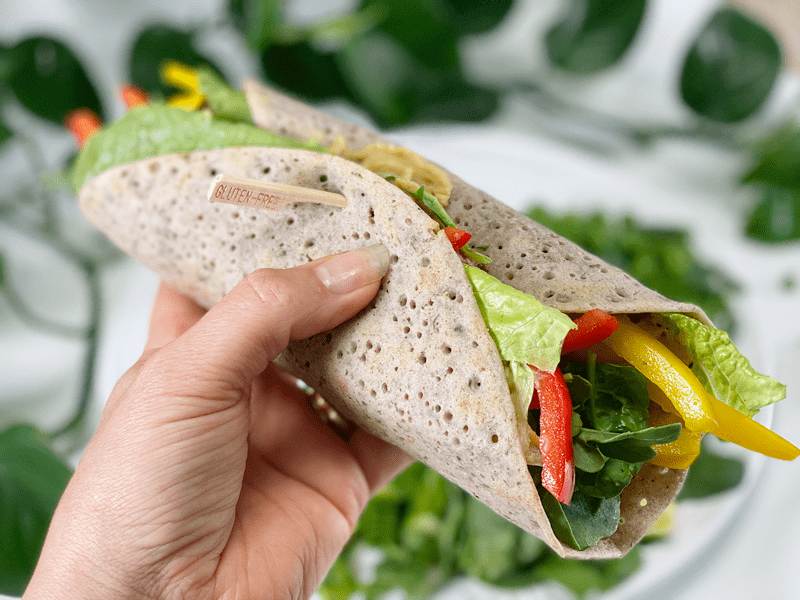
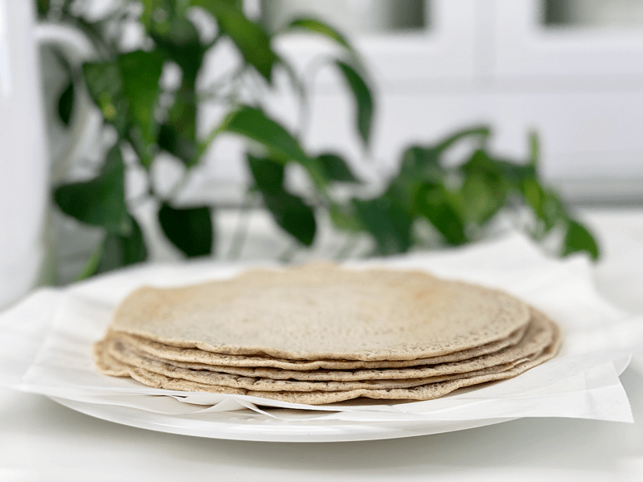
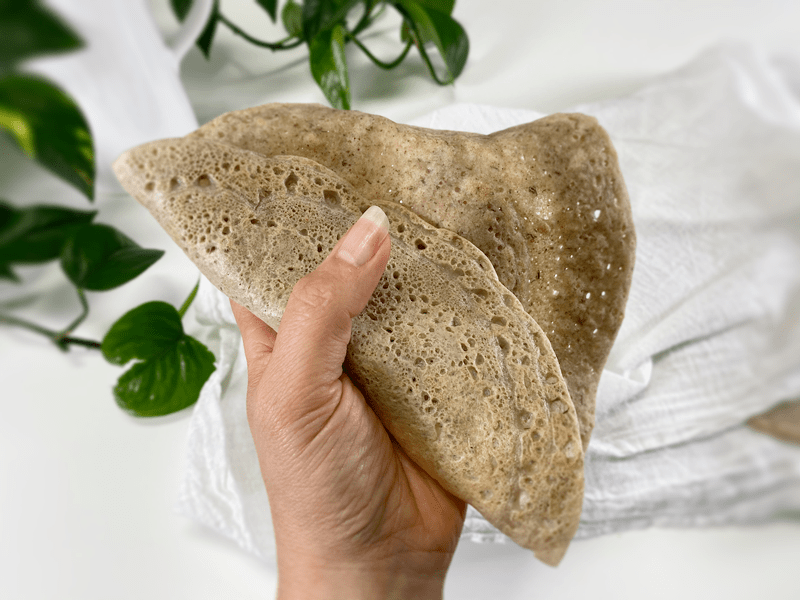
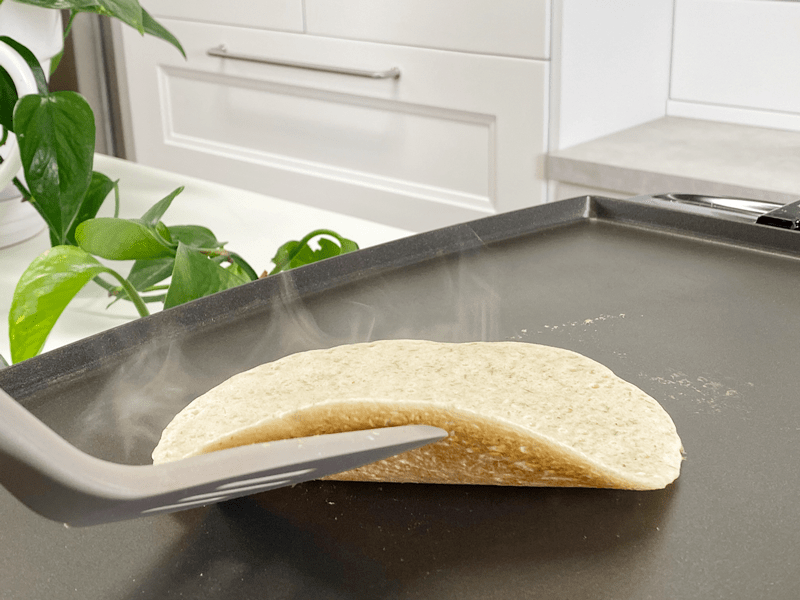
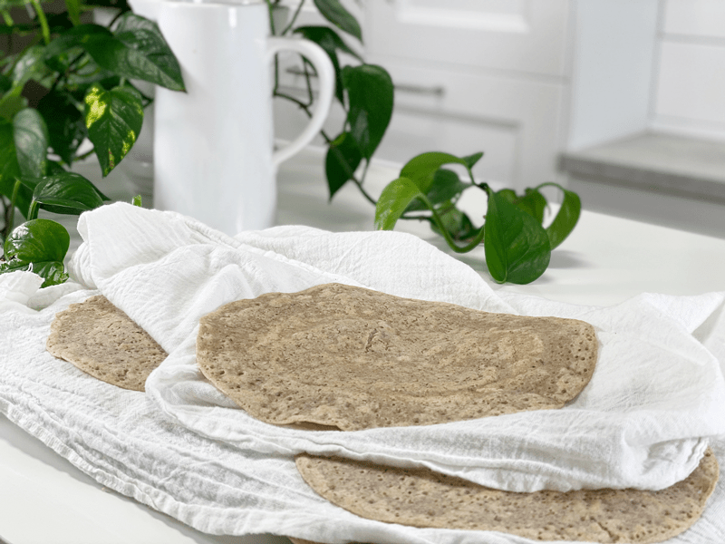
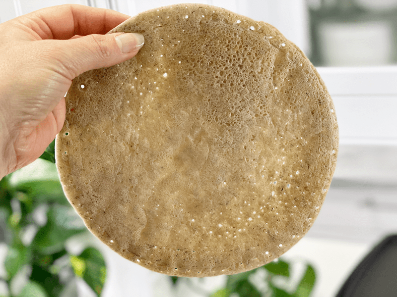

Caraway and Dill Buckwheat Wraps | Minimal Ingredients | Oil-Free
Ready for another delicious and nutritious whole food wrap recipe that doesn’t involve a rolling pin, flour, gluten, nuts, seeds, soy, yeast, oil, or sugar? I am happy to see you nodding yes, because that is what I am serving up today. Every time I create a wrap recipe, it goes through a checklist of tough criteria. #1: Delicious. #2: Nutritious. #3: Flexible. #4: Sturdy! If it doesn’t pass the test, it doesn’t get shared on the site. I am thrilled to say that this buckwheat wrap met all criteria with flying colors.

My wrap consisted of my homemade hummus, romaine lettuce, baby arugula and spinach, thinly sliced red and yellow pepper, followed by some dill pickle slices.
I have been creating and sharing recipes for over 10 years now and still to this day, I hold my breath every time Bob does a taste test for me. Today, Bob was outside working on the sprinkler system while I was supposed to be making us lunch. Well, I was…but it involved testing out a new recipe, which always means lunch will be later than normal.
Creating a recipe is a production that involves staging for progression photos, documenting results throughout the process, two or three times the amount of normal dishes, light placement, food styling, and photography. And in the end, it must be ready to be consumed! I don’t make recipes to just make recipes. Every dish, condiment, dessert, wrap, etc. that you find on the site has either been our breakfast, lunch, dinner, or dessert.
But did you know that isn’t always the case? A lot of recipe creators/food bloggers use “tricks of the trade” when it comes to photography. If you want to read about some wacky photo tricks that are used in the food industry, click (here) and (here). It’s crazy! I don’t use any food photography tricks…what you see is what we eat.
Back to the story… when Bob came in from working outside, he peered over my shoulder, and the first thing he said when he looked at the wrap was, “Those look like Injera Bread, can I have one?” I lifted one off the griddle and passed it over to him. He tore off a piece and popped it in his mouth. Then he ate a second wrap. I told him I was planning on making veggie-filled wraps with them for lunch. “Nope, I just want to eat them as-is!” Down went the third wrap. I, on the other hand, made a veggie wrap along with my favorite fat-free hummus recipe. Bob asked for a bite, then proceeded to eat a third of my wrap. Come dinner time, he asked me to make him a veggie wrap like I had at lunchtime. They were a win, and he declared that this was now his new favorite wrap.

Ingredient Run-Down
Buckwheat (raw)
- When you go to the market you will find “raw” buckwheat (uncooked, pale tan color), kasha (cooked buckwheat, brown in color), whole groats, and broken groats. For this recipe, I am using raw WHOLE buckwheat groats.
- The buckwheat needs to be soaked for at least 30 minutes but can be soaked up to 4 hours if you have a timing issue. Not only does the soaking process reduce the uptake of phytic acid, but it also softens and causes the buckwheat to swell, giving the batter exactly what we need for the expected outcome.
- The nutritional benefits of buckwheat are plentiful! It is high in magnesium, Vitamin B6, fiber, potassium, and iron. It is also a good source of copper, zinc, and manganese. Another good note is that the glycemic index is low, avoiding a spike in blood sugar.
- I don’t know about you, but I love learning where and how my food grows. If this is you, click (here) to learn more.
Caraway Seeds
- In Germany, caraway has a long tradition as the best herbal remedy for stomach bloating and intestinal cramps. It calms an irritated or nervous stomach and prevents bloating and flatulence. It also improves digestion by stimulating the secretion of gastric juices and improving the circulation of blood and intestinal mucus through the stomach.
- If you don’t have any caraway on hand, you can use fennel or cumin in its place.
Dried Dill Weed
- Dill’s name comes from the old Norse word dilla, which means “to lull.” This name reflects dill’s traditional uses as both a carminative stomach soother and an insomnia reliever.
- If you don’t have dried dill on hand, you can use fresh dill, but it will take three times as much. To learn more about how to convert measurements of dried spices to fresh, click (here).

Just being a show-off! (haha) Look how flexible and pliable that it is!
Tips and Techniques
- These wraps are super simple to make, but I will share a few things that I experienced while making them.
- Be sure to preheat your non-stick cooking surface. If the pan is cool to start with, the wrap will be a bit gummy in the center.
- The batter will be runny, thinner than pancake batter.
- Use a 1/2 cup measured amount for each wrap, spreading it out a little once the batter hits the pan. If they are too thick, they will be gummy in the center; if spread too thin, they will more fragile.
- Use my cooking times as suggestions. All heat surfaces and pans differ, which leads to different results. That is why I shared down below what to look for while they are cooking so you can gauge their progress while cooking.
- For hummus recipe ideas, try my Fat-Free Hummus, Smoked Paprika and Sun-Dried Tomato Hummus, or my Red Beet Hummus.
I hope you enjoy this simple yet delicious wrap recipe. Blessings, amie sue
 Ingredients
Ingredients
Yields 9 wraps (1/2 cup batter each)
- 1 1/2 cups raw buckwheat, soaked
- 2 cups water
- 1 1/2 tsp sea salt
- 1 Tbsp dried dill weed
- 1 tsp caraway seeds
Preparation
Soaking the Buckwheat
- Place the buckwheat in a glass bowl with 3 cups of water, along with 2 Tbsp of raw apple cider vinegar or lemon juice.
- Let it soak for 2-8 hours on the countertop.
- When ready to use, drain, and rinse the buckwheat thoroughly.
Assembly and Cooking
- In the blender, combine the soaked/drained/rinsed buckwheat, water, and salt. Blend until smooth and creamy.
- Add the dill and caraway seeds, pulsing the blender just enough to incorporate them.
- Preheat a nonstick pan or griddle (that’s what I used) to medium-high. If using a pancake griddle, set to 400 degrees (F).
- Pour a 1/2 cup of batter into the center of the pan.
- You can allow the batter to spread organically (ends up being about 6″ in diameter) or you use the bottom of the measuring cup to extend it to about 8-9″.
- Cook the first side for approximately 3 minutes.
- As you watch the wrap cook, the whitish batter starts to turn to more of a cream/tan color, cooking from the edges towards the center. Once the whole side shifts color, it’s time to flip. See the photos below.
- The edges also start to lift slightly when it nears flipping time.
- The wraps will steam quite a bit as they cook.
- Cook on the second side for 2 minutes.
- You will start to see the wrap turn light tannish color as it cooks on the second side.
- Don’t overcook, or the edges will crisp.
- Once the wraps are done cooking, transfer them to a cooling rack, covering them with a clean kitchen towel.
- After they have fully cooled, store them in an airtight container with parchment paper in between each wrap to prevent sticking.
- Store in the fridge for 5 or more days.
The following photos will show you the progression of cooking. The batter starts off more on the white side and slowly as it cooks, it starts to turn tan. Once all the white is gone, it’s a good sign that it is time to flip.
-

-
Once ready to flip, slide a spatula all around the edge of the wrap to make sure that it has loosened… again, another sign that it is ready to flip.
-

-
Once done cooking, place them on a cooling rack and keep covered with a towel.
-

-
I thought it was fun to see all the holes that the wrap developed while cooking.
© AmieSue.com